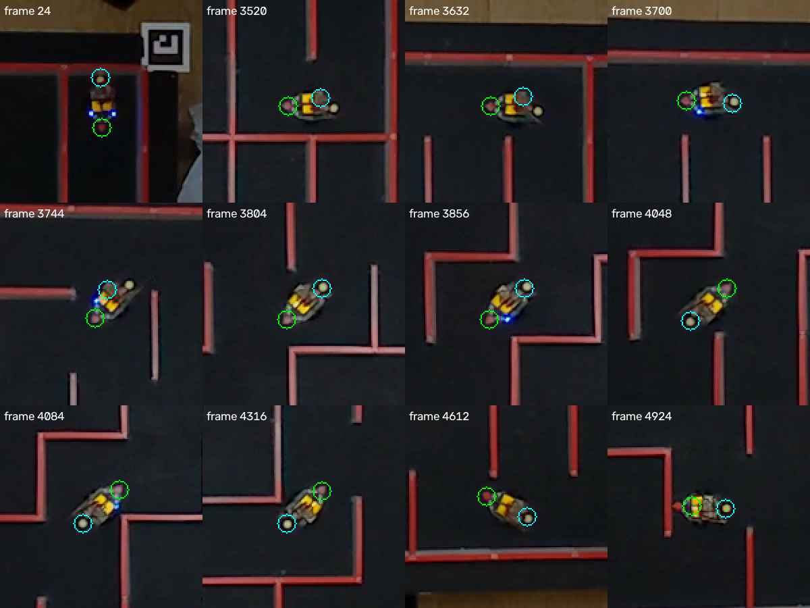
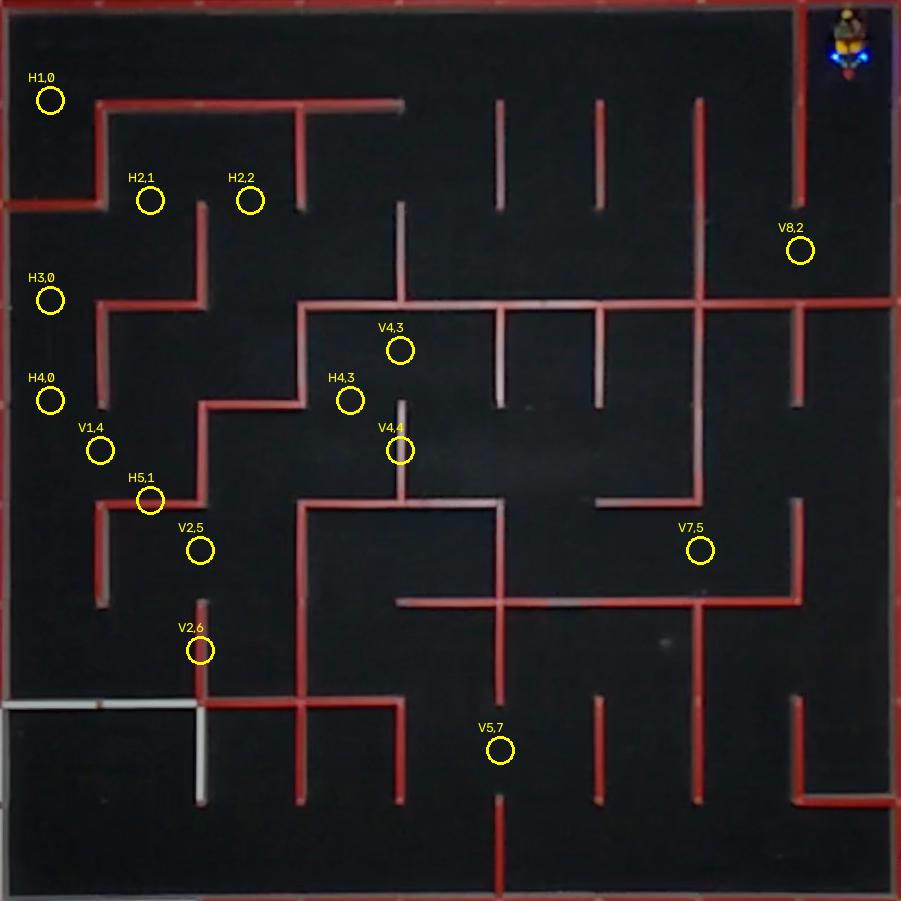

解析環境の依存確認を画面表示後に先行し、成功結果を同じPythonで再利用します。接続済みPixelのUSB設定を省き、接続・解析環境・CSV受信の準備段階を表示します。
| PC上の測定 | 結果 |
|---|---|
| 単体調整GUIの画面生成（変更前の確認） | 1.102秒 |
| 解析環境確認の初回 | 1.0359秒 |
| 同じPythonでの再確認 | 0.0005秒 |
カメラGUIの状態表示は250 ms間隔、履歴読込みは別処理で5秒間隔です。操作前・切断前の古い応答を棄却し、開始・停止の重複クリックを抑止します。録画JSONに接続・設定・開始受付・準備完了の各所要時間を保存します。
上の秒数はPC処理の測定です。実際の録画開始までの総時間、端末側のカメラ初期化・AF固定の改善効果は今回未測定です。
機体A・plain500の既存走行1本、間隔4で比較しました。標準検出で一意に決まった組を優先し、見つからないフレームだけ小さい・淡い目印の検出を試します。
| 変更前 | 変更後 | |
|---|---|---|
| 目印の組の検出 | 1084 / 1464（74.0%） | 1139 / 1464（77.8%） |
| ArUco登録 | 1461 | 1461 |
以前の検出フレームの欠落は0、新たな組の検出は55フレームです。下は追加検出から抽出した12枚です。緑が前、シアンが後の検出位置です。

検出率は正解率の保証ではありません。全フレームの正解ラベル検証と1600 mm/sの実走確認は未実施です。GUIの9×9解析は全フレームを既定とし、機体別の色検出JSONも選択できます。
登録画像に埋め込まれた過去の壁配置を使わず、この動画の16フレームからArUcoを毎回実復号して赤・白の壁候補を求めました。
壁候補 95辺、開口候補 76辺、未確認 9辺。旧配置との相違は15辺で、下の黄色い円に示します。確認済み壁配置を別途指定することもできます。

壁候補は遮蔽・反射の影響を受けます。元動画と照合するための表示で、本体の地図や走行設定には反映しません。
TYPE8側124件、カメラ共通側48件のテストが成功し、スキップは0件です。実機への書込み・走行・新規録画は行っていません。PC側はA/B共通、保存映像の比較はA、前後色の切替はA/Bの模擬テストで検証しました。
入力試行：C:\Users\sato1\Documents\git\mouse_type8_VScode\mouse_type8\tools\logs\20261118_230857_686674_ble_explore\camera_20261118_230907_881394\trial.json